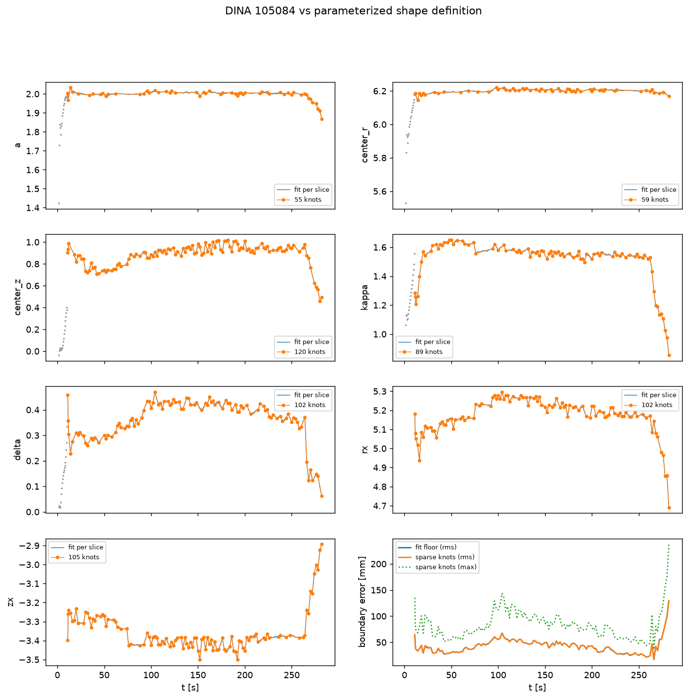
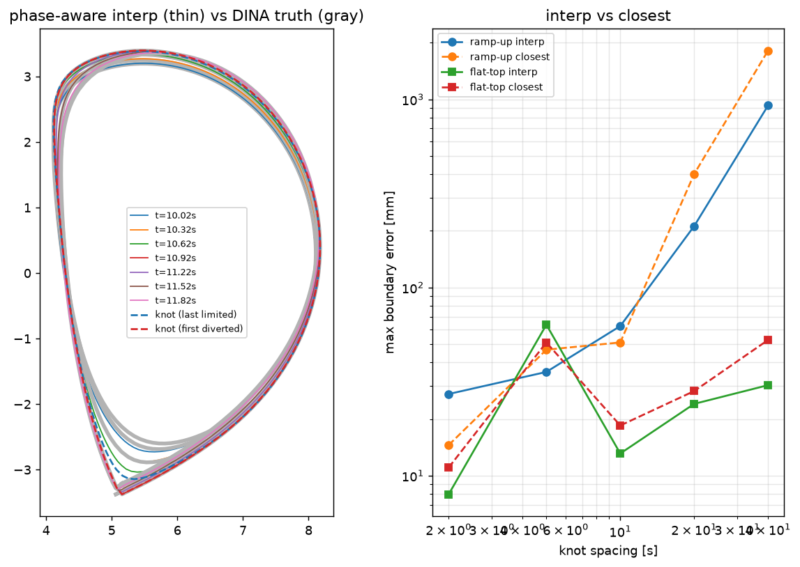
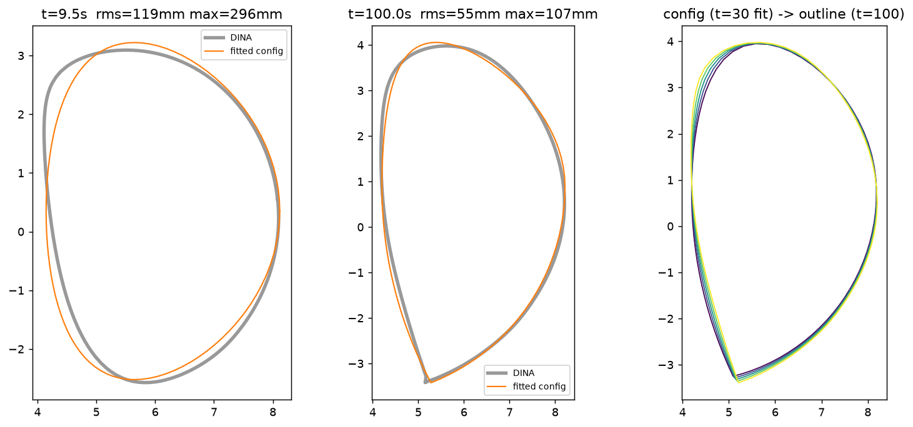

Shape toolkit — DINA 105084
DINA vs own (parameterized) definition over the pulse

Limited→diverted transition (phase-aware interp) + knot-spacing sweep

Config fit onto outlines + config→outline interpolation
